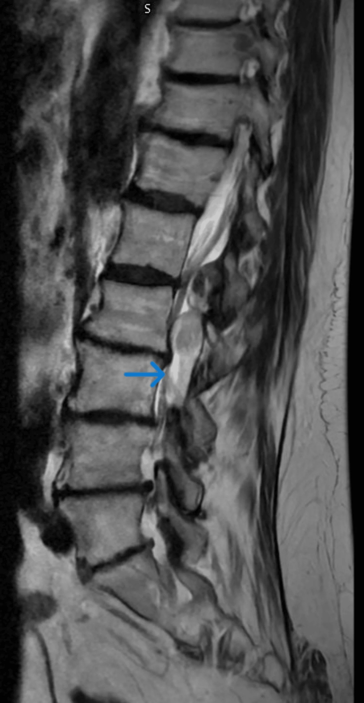
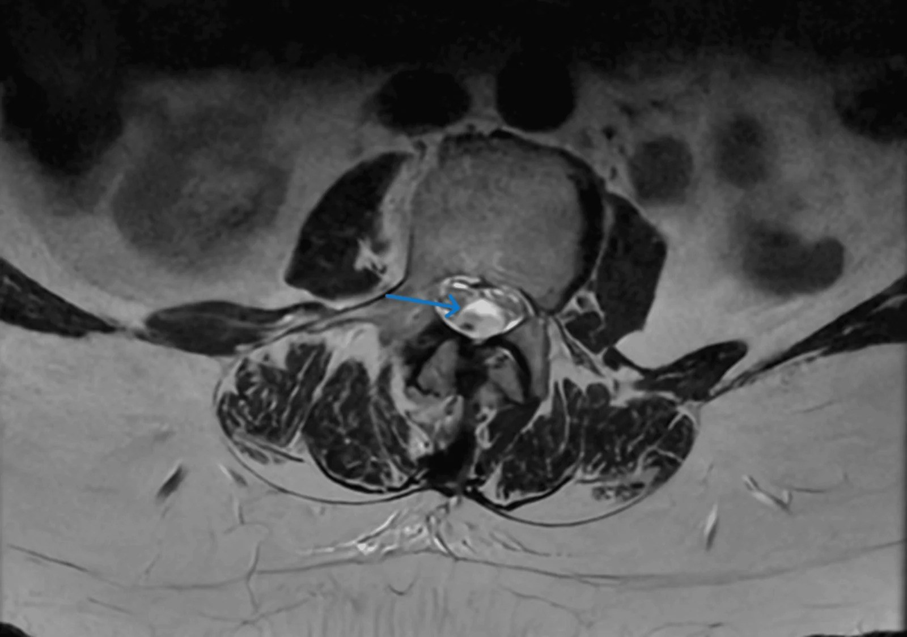
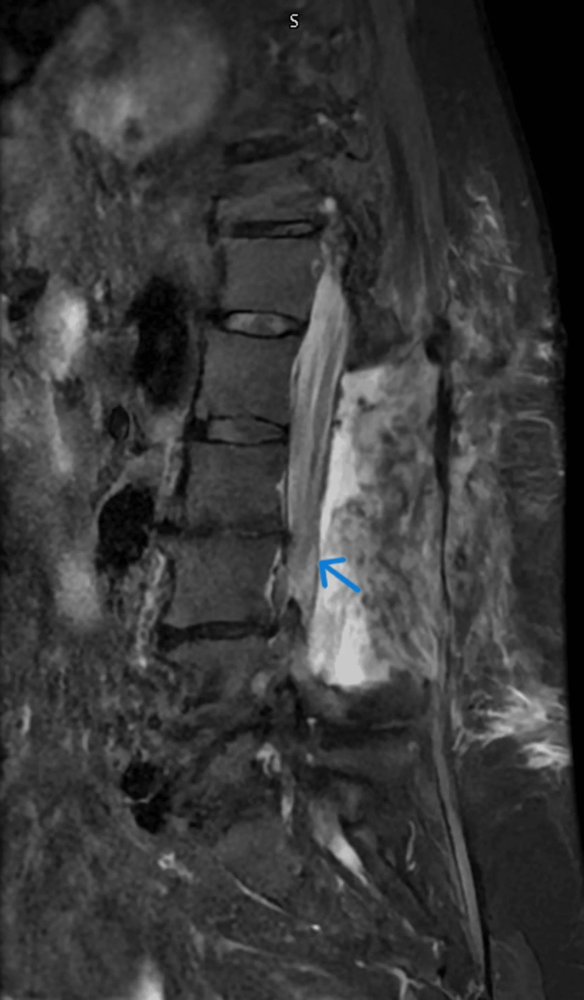
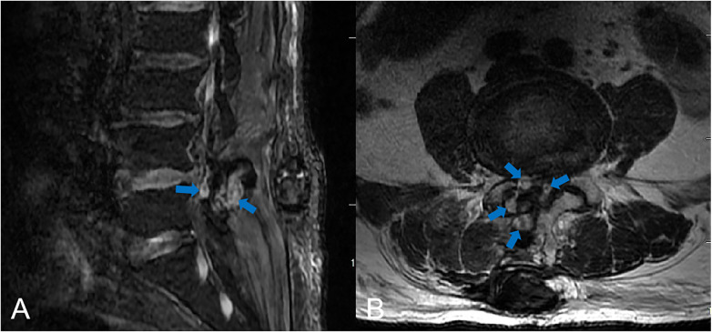
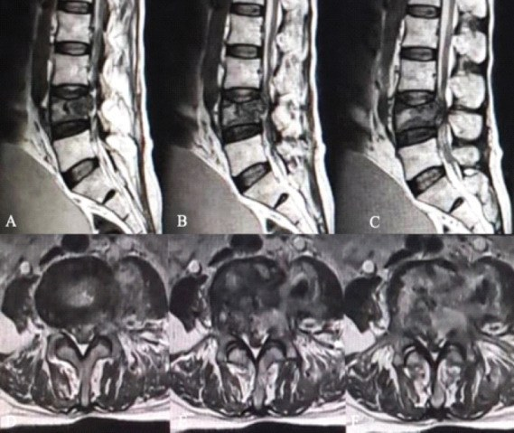

3013 — Hội chứng đuôi ngựa sau mổ cột sống: máu tụ – phù – mủ – đĩa tái phát / Postoperative cauda equina syndrome
Tags: pattern:hep-ong-song pattern:tu-mau-ngoai-mang-cung pattern:tu-mau-duoi-mang-cung pattern:phu-tuy pattern:ap-xe-ngoai-mang-cung vung:cot-song-that-lung vung:duoi-ngua score:ASIA score:CES-I-CES-R protocol:MRI-cot-song protocol:MRI-tuong-phan
Mức chắc chắn (certainty): tổng hợp y văn (literature synthesis) — khung số liệu từ tổng quan CES 2026 (PMC13265969), cohort 2947 ca giải ép thắt lưng (PMC13054050) và 3 ca nguyên văn có ảnh (PMC13508563 tụ máu dưới màng cứng giả ngoài màng cứng; PMC12975604 tụ máu ngoài màng cứng muộn ngày 5; PMC13348372 đuôi ngựa sau sinh thiết xương).
Bài này là phần “chuyện sau mổ” của 228 – Thoát vị đĩa đệm thắt lưng và là chẩn đoán phân biệt của 258 – Áp-xe ngoài màng cứng + 3012 – Áp-xe sau gây tê ngoài màng cứng. Điểm khác biệt cốt lõi: sau mổ, đau lưng và yếu nhẹ là “bình thường”, nên phải có ngưỡng để tách biến chứng cần mổ lại khỏi diễn tiến hậu phẫu thường.
1. Tổng quan bệnh học – cơ chế hình ảnh
- Giải phẫu quyết định toàn bộ bài: tủy sống tận cùng ở nón tủy L1–L2; dưới đó ống sống chỉ còn đuôi ngựa — các rễ L2–S5 xếp thành bó, không có tủy, không có hàng rào máu–tủy kiểu tủy. Vì vậy chèn ép gây đau rễ + yếu chi dưới kiểu ngoại vi + rối loạn cơ tròn, nhưng không có “mức cảm giác” tủy; dấu hiệu sớm nhất thường là bí tiểu không đau (painless retention) — người bệnh không tự báo vì không đau.
- Cơ chế chèn ép → mất chức năng: chèn ép cơ học làm giảm tưới máu rễ (rễ nằm trong dịch não tủy, nuôi dưỡng chủ yếu bằng khuếch tán) → phù → thiếu máu → hủy myelin/axon. Vì là tổn thương thiếu máu–chèn ép, thời gian quan trọng hơn mức độ: chèn ép nhẹ kéo dài có thể tệ hơn chèn ép mạnh được giải phóng sớm.
- Bốn cơ chế sau mổ, mỗi cơ chế có “đồng hồ” riêng:
- Máu tụ ngoài màng cứng (postoperative spinal epidural hematoma — PSEH): đám rối tĩnh mạch ngoài màng cứng không van, khoang chết sau cắt cung sau, tăng huyết áp lúc rút ống/thức tỉnh và rối loạn đông đẩy máu vào khoang → chèn ép giờ đến ngày 1–5 (ca PMC12975604: ngày 5).
- Phù tủy/đuôi ngựa do thao tác: phù do kéo – đốt – rửa, đỉnh 24–72 giờ, không có khối choán chỗ, thường tự giảm nếu không chèn ép thêm.
- Nhiễm trùng (áp-xe/phlegmon, viêm đĩa đệm): ngày 3–10, có vỏ ngấm + hạn chế khuếch tán, kèm CRP/PCT tăng; đây là cầu nối sang bài 3012 và 222.
- Thoát vị tái phát/mảnh đĩa sót – thao tác sai tầng – u tiến triển: ngay sau mổ hoặc vài ngày; mảnh đĩa liên tục với khoang đĩa, không ngấm thuốc (khác mô sẹo ngấm đều).
- TẠI SAO MRI phân biệt được — vật lý tín hiệu:
- Máu tụ: tín hiệu thay đổi theo tuổi máu — cấp (< 48 giờ, deoxyhemoglobin): T1 đồng, T2 rất tối; bán cấp sớm (3–7 ngày, methemoglobin nội bào): T1 sáng, T2 tối; bán cấp muộn: T1 sáng, T2 sáng. Không vỏ ngấm, không hạn chế khuếch tán (trừ khi bội nhiễm).
- Phù: T2/STIR tăng, T1 đồng/giảm, ngấm thuốc nhẹ lan tỏa ở rễ, không có khối đẩy bao tủy.
- Áp-xe: viền ngấm dạng vòng, lòng không ngấm, DWI sáng/ADC tối — mủ nhớt hạn chế khuếch tán.
- Đĩa tái phát: T2 đồng/tăng, bờ rõ, liên tục với khoảng đĩa, ngấm thuốc vành/rìa (mô hạt), không ngấm trung tâm.
- Sẹo xơ: ngấm thuốc đều, muộn, không có hiệu ứng choán chỗ rõ — cần MRI có tương phản mới tách được sẹo với đĩa tái phát.
- Số liệu định lượng phải nhớ:
- CES: 1–3/100.000 dân/năm; < 2% thoát vị đĩa đệm thắt lưng; nhưng chiếm tỷ lệ kiện tụng cao nhất trong bệnh lý cột sống.
- PSEH cần mổ lại: 2,3% (68/2947 ca vi phẫu giải ép hẹp ống sống) — không hề hiếm như cảm giác lâm sàng.
- Yếu tố nguy cơ PSEH: tăng huyết áp trước mổ OR 6,24 (95% CI 2,51–15,52); thời gian mổ OR 1,01/phút (trung vị 116 phút ở ca PSEH vs 86–90 phút ở nhóm chứng); mổ nhiều tầng 37% vs 24%.
- Ngưỡng hành động: PVR > 200 mL nghi CES; giải ép < 48 giờ cải thiện bàng quang/vận động/cảm giác/tình dục; CES-I giải ép < 24 giờ hồi phục bàng quang tốt hơn; CES-R (bí tiểu không đau, mất cảm giác bàng quang) tiên lượng xấu dù mổ sớm.
- Ca tụ máu dưới màng cứng (PMC13508563): nữ 73 tuổi, apixaban, yếu chi + bí tiểu; mổ giải ép 9 giờ sau khởi phát; hồi phục hoàn toàn 3 tháng.

Nữ 73 tuổi đang dùng apixaban: khối sau ống sống L1–L3 (mũi tên) bị đọc là tụ máu ngoài màng cứng; mổ vào thấy màng cứng căng, tím, không đập → mở màng cứng lấy máu tụ DƯỚI màng cứng. Ảnh nguyên bản. Nguồn: Altunbi B et al, Cureus 2026;18(7):e113446 (PMC13508563), Fig. 1, CC BY 4.0.2. Mẫu hình + chẩn đoán phân biệt theo vị trí (gamut)
- Theo mốc thời gian sau mổ — “đồng hồ” gợi ý nguyên nhân:
- 0–6 giờ: máu tụ (đang chảy), mảnh đĩa sót, thao tác sai tầng, thiếu máu rễ do kéo dài.
- 6–72 giờ: máu tụ (biểu hiện muộn), phù tủy/đuôi ngựa, tụ máu dưới màng cứng (hiếm, hay bị đọc nhầm).
- 3–10 ngày: áp-xe/phlegmon, viêm đĩa đệm, tụ máu biểu hiện rất muộn (ca PMC12975604: ngày 5).
- > 2 tuần: sẹo xơ chèn ép, giả màng não (pseudomeningocele), u tiến triển/tái phát, di chứng thiếu máu rễ.
- Theo vị trí khối trên axial — quyết định đường mổ lại:
- Sau (dorsal): máu tụ từ đám rối tĩnh mạch sau, sau cắt cung sau — hay gặp nhất; dẫn lưu qua đường mổ cũ.
- Trước (ventral): mảnh đĩa, xương, u; không tiếp cận được bằng đường sau đơn thuần nếu khối lớn.
- Chu vi (circumferential): máu tụ lan tỏa, áp-xe; nguy cơ chèn ép nặng, cần mổ sớm.
- Dưới màng cứng (subdural): hiếm, MRI không phân biệt được với ngoài màng cứng; dấu hiệu màng cứng căng, tím, mất đập sau khi đã giải ép ngoài màng cứng là chốt trong mổ.
- Theo hình thái tín hiệu — 5 nhóm “MÁU – PHÙ – MỦ – ĐĨA – U”: MÁU (theo tuổi máu, không vỏ), PHÙ (T2/STIR tăng, không khối), MỦ (vỏ + DWI), ĐĨA (liên tục khoảng đĩa, ngấm rìa), U (khối đặc, phá xương, ngấm không đều).
- Bẫy vị trí “điểm mù” của MRI hậu phẫu: phần sau ống sống bị artifact kim loại/dụng cụ làm mất tín hiệu → luôn xem STIR, T2 không fat-sat, và các lát cắt trên–dưới ổ mổ; nếu vẫn mờ và lâm sàng nặng → CT myelography (khi MRI chống chỉ định) hoặc mổ thăm dò.
- Bẫy “bình thường hóa” sau mổ: mọi bệnh nhân đều có đau và hạn chế vận động vài ngày đầu, nên không triệu chứng nào tự nó “đủ nhẹ để bỏ qua” — chỉ có tập hợp red flag + PVR + mốc thời gian mới quyết định chụp; ngược lại, đừng chụp MRI chỉ vì lo lắng khi thần kinh và PVR bình thường (tránh mổ lại không cần thiết vì “có lớp dịch hậu phẫu”).
3. Bảng so sánh phân biệt (ma trận đối chiếu)
| Thực thể (entity) | Hình ảnh/lâm sàng điển hình | Chốt vào (rule-in) | Chốt loại (rule-out) | Gợi ý xác nhận |
|---|---|---|---|---|
| Tụ máu ngoài màng cứng sau mổ (PSEH) | Khối sau ống sống, tín hiệu theo tuổi máu, không vỏ; đau tăng + yếu trong 0 giờ–5 ngày | Khối choán chỗ mới + tín hiệu máu + không hạn chế khuếch tán | Vỏ ngấm + DWI sáng + CRP tăng → áp-xe; liên tục khoảng đĩa → đĩa tái phát | MRI cấp; INR/tiểu cầu; mổ lại giải ép nếu có thiếu hụt |
| Tụ máu dưới màng cứng | Cùng hình ảnh “khối sau” như ngoài màng cứng; không có dấu hiệu đặc hiệu trên MRI; thường ở người chống đông | Sau khi đã giải ép ngoài màng cứng, màng cứng vẫn căng/tím/không đập | Màng cứng trở lại hồng, đập bình thường sau giải ép → không phải dưới màng cứng | Mở màng cứng đường giữa khi nghi ngờ; MRI hậu phẫu xác nhận |
| Phù tủy/đuôi ngựa do thao tác | T2/STIR tăng lan tỏa, không khối, ngấm nhẹ; đau giảm dần | Không có khối đẩy bao tủy + đỉnh 24–72 giờ + cải thiện theo thời gian | Khối choán chỗ rõ + đẩy bao tủy → máu tụ/đĩa/áp-xe | MRI lặp lại 24–48 giờ nếu xấu đi; theo dõi thần kinh |
| Áp-xe ngoài màng cứng hậu phẫu | Ổ có vỏ ngấm, DWI sáng; sốt/CRP tăng xuất hiện sau 3–10 ngày | Vỏ + hạn chế khuếch tán + hội chứng nhiễm trùng | Không vỏ, không hạn chế khuếch tán, khởi phát tức thì → máu tụ | MRI + cấy máu, cấy dịch/mô; kháng sinh ≥ 6 tuần + dẫn lưu |
| Thoát vị tái phát/mảnh đĩa sót | Khối trước/trước bên, liên tục với khoảng đĩa, T2 đồng/tăng, ngấm rìa | Vị trí + liên tục khoảng đĩa + ngấm rìa | Ngấm đều muộn, không liên tục đĩa → sẹo xơ | MRI có tương phản; so ảnh mổ; mổ lại lấy mảnh |
| U/tổn thương xâm lấn tiến triển | Khối đặc, phá xương, ngấm không đều; có thể sau sinh thiết | Phá xương + ngấm không đều + tiền sử ung thư | Tín hiệu máu thuần + không phá xương → máu tụ | MRI + CT xương; mô bệnh học |

Cùng bệnh nhân: axial T2 tại L3 — đuôi ngựa bị đẩy ra trước, khối sau ống sống (mũi tên). Có nang khớp L1–2 đi kèm đóng vai trò “vật gây nhiễu” khiến báo cáo ban đầu chọn ngoài màng cứng. Ảnh nguyên bản. Nguồn: Altunbi B et al, Cureus 2026;18(7):e113446 (PMC13508563), Fig. 2, CC BY 4.0.4. Protocol chụp + hệ phân độ/điểm chuẩn hóa
- Ai chụp — ngưỡng không chờ: sau mổ cột sống, bất kỳ dấu hiệu sau → MRI cấp trong 1–2 giờ: bí tiểu mới/PVR > 200 mL, mất cảm giác yên ngựa, yếu chi dưới mới hoặc tăng, đau lan hai chân mới, mất trương lực hậu môn, đại tiện không tự chủ. Không “chờ đỡ phù hậu phẫu”.
- Protocol MRI: T1W, T2W sagittal + axial, STIR/T2 fat-sat (bắt phù + giảm artifact), DWI/ADC (mủ), T1W + gadolinium (sẹo vs đĩa tái phát, vỏ áp-xe). Không cần gadolinium để cấp cứu máu tụ — nhưng cần khi nghi nhiễm hoặc phân biệt sẹo/đĩa. Ghi rõ: mức chèn ép tối đa (mm hoặc % diện tích ống sống), chiều dài khối theo trục dọc, tín hiệu T1/T2, có/không vỏ ngấm, có/không hạn chế khuếch tán.
- Khi MRI chống chỉ định: CT myelography (thấy chèn ép, không phân biệt mủ/máu); CT thường chỉ để loại trừ khối xương/di lệch dụng cụ.
- Phân độ & ngưỡng — dùng đúng tên:
- ASIA/AIS cho mức tổn thương (nếu tổn thương lan lên tủy); sức cơ 0–5 từng nhóm.
- Gleave–Macfarlane: CES-I = còn cảm giác bàng quang + còn một phần kiểm soát tiểu (rối loạn kiểu tiểu); CES-R = bí tiểu không đau, mất cảm giác bàng quang, mất trương lực cơ tròn. CES-I là “cửa sổ” để mổ, CES-R tiên lượng xấu dù mổ.
- PVR > 200 mL = ngưỡng nghi; đo lại sau khi thông tiểu để tránh nhiễm trùng do ứ đọng.
- Thời điểm mổ lại: giải ép < 24–48 giờ; CES-I < 24 giờ hồi phục bàng quang tốt hơn; có thiếu hụt thần kinh + khối choán chỗ → mổ lại ngay, không “thử corticoid”.
- Trước mổ: dừng/đảo chống đông, kiểm tra INR/tiểu cầu, kiểm soát huyết áp (tránh tăng huyết áp khi rút ống — yếu tố nguy cơ PSEH), thông tiểu theo dõi PVR, không dùng an thần che lấp đánh giá thần kinh.
flowchart TD
A[Sau mổ cột sống<br/>đau/yếu mới hoặc bí tiểu] --> B{Red flag?<br/>PVR > 200 mL, yên ngựa,<br/>yếu tăng, đại tiểu không tự chủ}
B -->|Không| C[Theo dõi thần kinh 2–4 giờ<br/>+ PVR, giảm đau không an thần]
B -->|Có| D[STOP opioid/PCA<br/>MRI cấp ≤ 1–2 giờ<br/>T1/T2/STIR + DWI + T1+C]
D --> E{Khối choán chỗ?}
E -->|Không, chỉ phù| F[Điều trị bảo tồn<br/>MRI lặp lại 24–48 giờ]
E -->|Có| G{Tín hiệu}
G -->|Theo tuổi máu, không vỏ| H[Tụ máu ngoài màng cứng<br/>→ mổ lại giải ép]
G -->|Vỏ + DWI sáng| I[Áp-xe<br/>→ dẫn lưu + kháng sinh ≥ 6 tuần]
G -->|Liên tục khoảng đĩa, ngấm rìa| J[Đĩa tái phát/mảnh sót<br/>→ mổ lại lấy mảnh]
G -->|Khối đặc, phá xương| K[U/tổn thương tiến triển<br/>→ mô bệnh học]
H --> L[Màng cứng vẫn căng/tím<br/>→ mở màng cứng tìm máu tụ DƯỚI màng cứng]
5. Biến thể bình thường và cạm bẫy
- “Đau hậu phẫu bình thường” là cạm bẫy số một: đau tăng dần theo ngày, lan hai chân, kèm yếu mới hoặc bí tiểu không phải diễn tiến thường — ca PMC12975604 có 5 ngày hồi phục tốt rồi đột ngột đau + yếu hai chi + mất cảm giác yên ngựa + đại tiện không tự chủ.
- MRI hậu phẫu sớm “luôn có gì đó”: dịch/khí/mô hạt sau mổ làm dày khoang ngoài màng cứng; đừng đọc mọi lớp dịch là máu tụ. Chốt bằng so với lâm sàng + tín hiệu máu + chèn ép bao tủy thực sự.
- Artifact kim loại che lấp: dụng cụ cố định làm mất tín hiệu vùng mổ → xem STIR và lát cắt ngoài vùng dụng cụ; nếu vẫn không yên tâm, CT myelography.
- Nang khớp (facet cyst) là “vật gây nhiễu” kinh điển: trong ca PMC13508563, nang khớp L1–2 + vẹo cột sống khiến báo cáo chọn ngoài màng cứng; nang khớp không gây màng cứng căng/tím — dấu hiệu trong mổ mới đúng.
- Tụ máu dưới màng cứng ≠ ngoài màng cứng: MRI không phân biệt được (cùng dạng “liềm/biconvex sau”); nếu sau khi lấy máu tụ ngoài màng cứng màng cứng vẫn căng, không đập, màu tím → mở màng cứng đường giữa; đừng đóng lại và chờ.
- Chống đông “bình thường” không loại trừ chảy máu: bệnh nhân dùng DOAC có INR/APTT bình thường vẫn chảy máu đáng kể (apixaban trong ca PMC13508563); hỏi kỹ thuốc và thời điểm liều cuối.
- Bí tiểu do opioid > CES: opioid gây bí tiểu, nhưng PVR > 200 mL + mất cảm giác yên ngựa thì không quy cho thuốc; và không đặt catheter rồi bỏ theo dõi.
- Sai tầng/“đã mổ đúng tầng”: nếu triệu chứng không khớp hình ảnh, đếm lại đốt sống từ C2 trên sagittal toàn cột sống và đối chiếu marker/fluoroscopy trong mổ.
6. Tự lượng giá — Blind Quiz
Ca 1 — Nữ 73 tuổi dùng apixaban, đau lưng đột ngột rồi yếu chân phải + bí tiểu. Nhìn ảnh trước.
- Câu hỏi: Khối ở khoang nào? Vì sao không thể chốt ngoài màng cứng chỉ bằng MRI này? Dấu hiệu nào trong mổ buộc phải mở màng cứng?
Bấm để hiện đáp án (findings + chẩn đoán)
- Dấu hiệu: khối sau ống sống L1–L3 chèn ép bao tủy; axial L3 cho thấy đuôi ngựa bị đẩy ra trước; có nang khớp L1–2 gây nhiễu.
- Chẩn đoán: tụ máu dưới màng cứng tự phát (không phải ngoài màng cứng) — MRI không phân biệt được hai khoang; màng cứng căng, tím, mất đập sau khi đã giải ép ngoài màng cứng là chốt → mở màng cứng đường giữa, lấy máu tụ.
- Xử trí: giải ép 9 giờ sau khởi phát; hồi phục hoàn toàn 3 tháng; khởi động lại apixaban sau 2 tuần khi MRI xác nhận đã giải ép hoàn toàn.

- MRI 2 tuần sau mổ: máu tụ đã lấy hết, bao tủy trở lại hình dạng bình thường — mốc để quyết định dùng lại chống đông.
- Nguồn: Altunbi B et al, Cureus 2026;18(7):e113446 (PMC13508563), Fig. 1–2, 4, CC BY 4.0.
Ca 2 — Nam 69 tuổi, mổ nội soi lấy đĩa L4–5, ngày 5 đột ngột đau lưng + yếu hai chân + mất cảm giác yên ngựa.

- Câu hỏi: Vì sao “ngày 5” vẫn có thể là biến chứng cấp? Nêu 3 việc phải làm ngay và 1 điều không được làm.
Bấm để hiện đáp án (findings + chẩn đoán)
- Dấu hiệu: khối ngoài màng cứng L4–5 tăng tín hiệu trên T2 fat-sat, chèn ép bao tủy; bệnh cảnh đau + yếu hai chi + yên ngựa + đại tiện không tự chủ.
- Chẩn đoán: tụ máu ngoài màng cứng hậu phẫu muộn (delayed POSEH) — PSEH có thể biểu hiện ngày 1–5, không chỉ vài giờ đầu.
- Phải làm: ngừng opioid/PCA, MRI cấp, mổ lại giải ép ngay (± kiểm soát huyết áp, đông máu). Không được: chờ đỡ phù hoặc cho corticoid rồi theo dõi.
- Kết cục: mổ lấy nhiều cục máu; yếu chân trái cải thiện nhưng rối loạn đại tiểu vẫn tồn tại — nhấn mạnh giá của sự chậm trễ.
- Nguồn: Li H et al, Front Surg 2026;13:1737628 (PMC12975604), Fig. 4, CC BY 4.0.
Ca 3 — Nam 60 tuổi, tổn thương L4 chưa rõ bản chất, sinh thiết qua cuống; ngày 4 đau tăng + yếu hai chân + bí tiểu.

- Câu hỏi: Đây là biến chứng gì và nguyên nhân nào không phải máu tụ? Điều gì quyết định chẩn đoán cuối?
Bấm để hiện đáp án (findings + chẩn đoán)
- Dấu hiệu: xẹp thân đốt L4 tiến triển + khối mô mềm ngoài màng cứng sau chèn ép đuôi ngựa (các panel sagittal/axial T2).
- Chẩn đoán: hội chứng đuôi ngựa cấp sau sinh thiết xương, do mô u (non-Hodgkin lymphoma) + máu tụ tại đường sinh thiết, không phải áp-xe; chẩn đoán cuối nhờ mô bệnh học.
- Bài học: sau sinh thiết xương/xâm lấn, đau tăng + yếu mới phải chụp MRI cấp; khối mô mềm sau đốt sống bệnh lý có thể là u lan ra, không chỉ máu tụ.
- Nguồn: Gohil KR et al, J Orthop Case Rep 2026;16(7):340–346 (PMC13348372), Fig. 3, CC BY-NC 4.0.
Bài liên quan chéo
- 228 – Thoát vị đĩa đệm thắt lưng & Pfirrmann/Modic
- 258 – Áp-xe ngoài màng cứng do loét tì đè
- 3012 – Áp-xe ngoài màng cứng sau gây tê ngoài màng cứng
- 222 – Viêm đốt sống–đĩa đệm
- 223 – Chấn thương tủy sống
- 220 – Ống sống tủy: giải phẫu cắt lớp
Ảnh
- 5 ảnh, tải từ Europe PMC/PMC, giấy phép từng file trong
images/CREDITS.md(CC BY 4.0, CC BY-NC 4.0); ảnh giữ nguyên bản, không crop/kéo giãn. - Không có ảnh composite: các nguồn là ảnh lâm sàng đơn, khác chuỗi xung/khác bệnh nhân — ghép sẽ gây hiểu nhầm “cùng một ca”.
Không dùng để chẩn đoán độc lập khi chưa có người hướng dẫn.